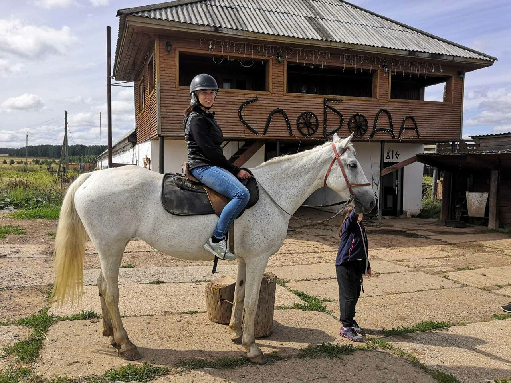

Конный клуб «Слобода»
📍 с. Сергино, ООО «Урожай»

Конный клуб «Слобода» находится в с. Сергино. Это племенной репродуктор по воспроизводству орловских рысаков.
Здесь можно увидеть красивых лошадей, покататься верхом или в санях/повозке, покормить их лакомствами.
На территории работает гостиница и этно-кафе «Амбарчик», где подают блюда местной кухни. Уникальная возможность прикоснуться к культуре коневодства.
Контакты
Сайт: slobodasergino.ru
Кафе: slobodasergino.ru/cafe
Адрес: Пермский край, Нытвенский район, с. Сергино